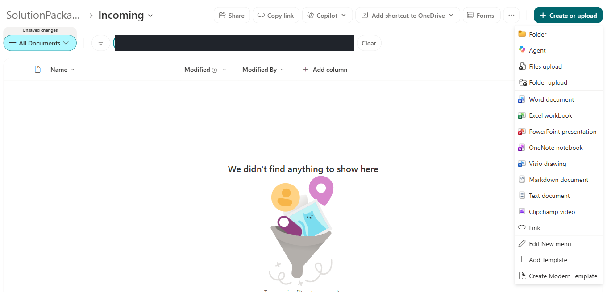
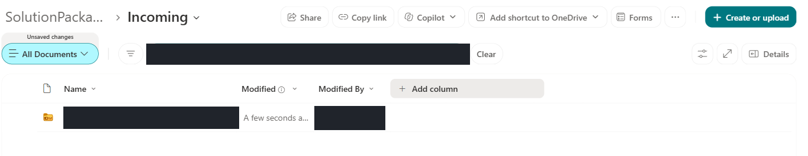
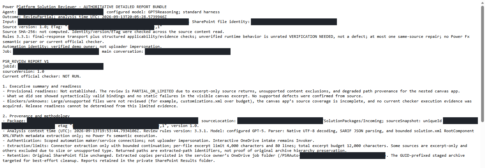
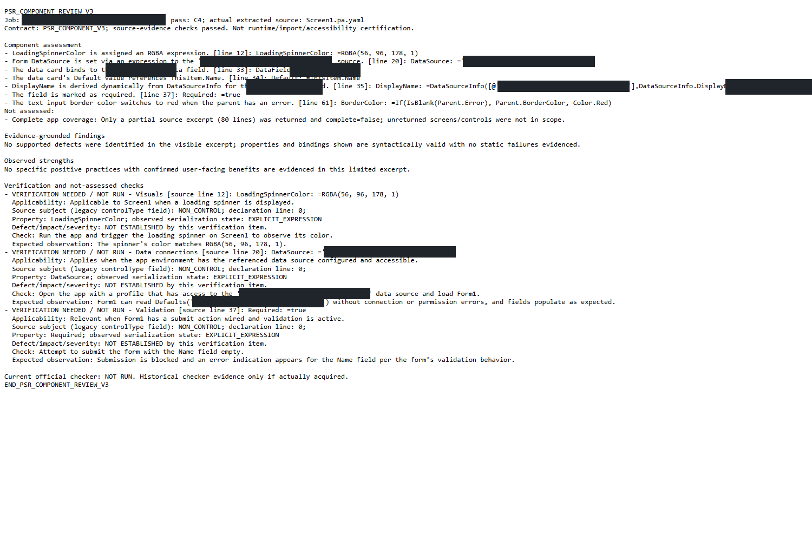
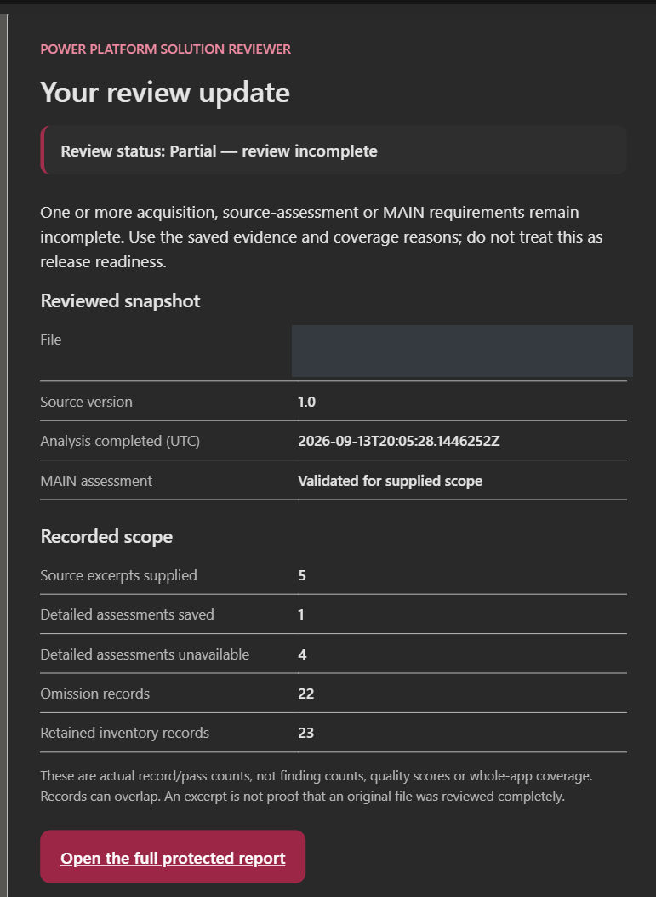
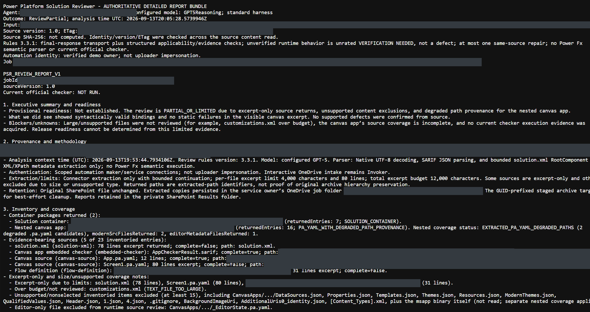
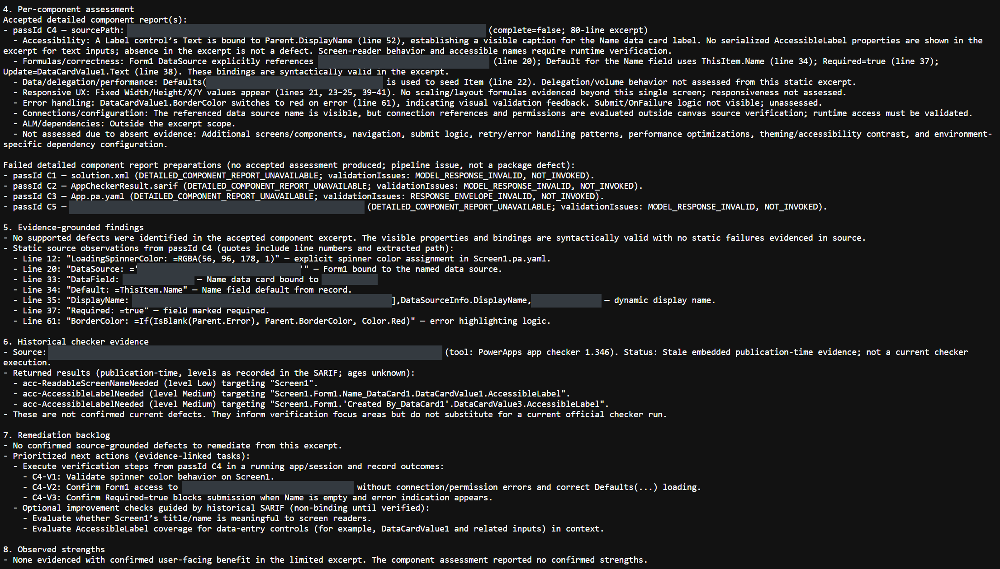
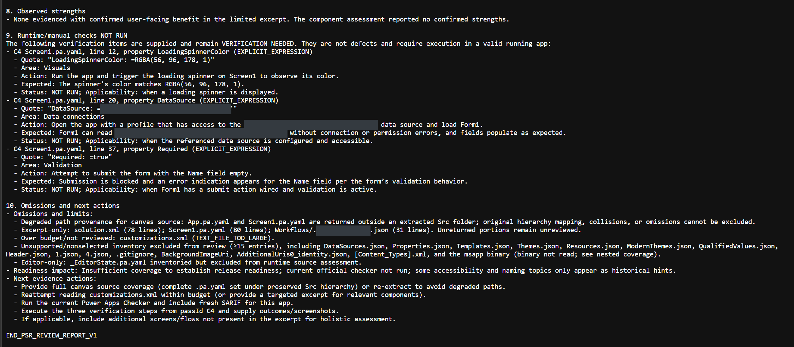

01
NATIVE UPLOAD
Select → uploaded row
{kind=link}

{kind=link}

Original export in approved private storage—not native chat or this website. The app, roles and workflow were not imported or executed.
Real canvas app · matched review
Upload → trigger → agent → saved results → email → open report. Follow the handoff and inspect the real output.
Experimental · Partial, not full success. Source advice, not app execution or compiler/checker certification.
Actual matched review captures, with the automatic handoff explained between upload and output. Steps 2–3 explain configuration, not run status. Notification is not verified Inbox receipt.
NATIVE UPLOAD


Original export in approved private storage—not native chat or this website. The app, roles and workflow were not imported or executed.
AUTOMATIC INTAKE
Configured flow · not a run-history screenshot
When a file is created (properties only) watches SolutionPackages/Incoming. Polling is configured every minute, not an instant-delivery guarantee.
The flow checks enabled intake, authorization and private source scope, then records the eligible file version as a review job.
A new file, not a new folder. Only .zip / .msapp files directly in Incoming are eligible. Empty folders and files inside new subfolders are not reviewed.
No chat prompt is needed. When intake is enabled and approval/scope checks pass, SharePoint detection starts the flow; the flow invokes the agent. The agent does not independently watch a folder. See the workflow details.
AGENT REVIEW
Configured agent handoff · not a run-history screenshot
Extract supported content and collect limited source excerpts. The submitted app or solution is never imported or executed.
ExecuteCopilotAsyncV2 sends the evidence to the same published agent. The flow saves its validated output for the next step.
Actual example: six model calls. One of five selected assessments was accepted; four remained unavailable. The report retains Partial rather than implying full success.
The standard Copilot Studio agent reviews supplied source evidence, not a running application. Coverage limits and unavailable assessments remain visible. Inspect the agent tools and instructions.
SAVED REVIEW OUTPUT


Protected results retain the full available MAIN, C4, inventory and coverage. C1/C2/C3/C5 remain unavailable; no substitute reports are invented.
USER-PROVIDED NOTIFICATION

A guarded SendEmailV2 succeeded. The notification includes an “Open the full protected report” link. Original Inbox receipt and recipient containment remain unverified. Read the delivery boundary.
USER-PROVIDED REPORT VIEWS
The report views you shared: opening and scope, assessment/findings, then verification and omissions. Open the complete redacted assessment →



User-provided screenshots, not new TEST captures or proof of clicking the email link. Capture times are unknown; original viewport clipping and privacy masks are retained. The linked reader contains the complete available text.
Partial: 1/5 assessments accepted, four unavailable. C4 covers 80/326 screen lines. The notification body is not verified Inbox receipt.
Complete available output · genuine review
All ten MAIN sections, complete footer/unavailable records, the accepted C4 assessment and both full appendices. The 58 KB coverage file is included in full—not shortened because it is long.
Complete approved redacted TXT files, eight unchanged image derivatives and two provenance records. No raw app, solution ZIP, diagnostics or private originals.
Complete MAIN text ↓ · Exact input/published hashes
“Syntactically valid” is retained report wording, not compiler proof. Embedded checker records have unknown age; no current checker ran. Coverage/omissions stay explicit.
The native menu/confirmed row and native MAIN/C4 captures have their own recorded capture times. The four user-provided images are not Test captures and have no established capture times. Only the correlations supported by the supplied provenance are claimed.
All eight approved image payloads are unchanged. Test reports crop/mask pixel-integrity review; the site author performed normal visual/privacy review of the approved derivatives, not private originals. No mixed Inbox/autoreply image is included.
Native/report provenance · User-capture provenance and limits · Scoped public privacy report
Presentation options—not extra review authority
The reader supports browser Print / Save as PDF. It is a static presentation of approved reports, not an automated runtime PDF service.
Populate a Microsoft Word template can produce document content; save the DOCX using the approved storage connector, then optionally use Convert Word Document to PDF. Verify complete content and actual privacy before using a link. TXT/JSON remains authoritative.Word Online (Business) is Premium in Power Automate. Check licensing/capacity, supported controls, file/time limits, conditional-access and sensitivity-label restrictions. If policy blocks conversion, stop—do not weaken authentication, labels or sharing.
Official Word connector actions and limitations · Official OneDrive connector limits
01 / Two intake paths
One agent, two carefully separated routes. The diagrams below describe the architecture; they are not captured runs.
.zip or .msapp to storage—not this site or native chat. Manual review uses the operator’s own OneDrive Inbox. Automatic review uses an approved private SharePoint Incoming library. Keep the original extension.Identity: the caller’s selected OneDrive Invoker connection. No maker fallback.
“Review my solution export” in the authenticated agent.
Private Inbox instructions → filename validation → explicit trusted-export consent.
InvokeFlowTaskAction → native OneDrive collection flow, in Invoker mode.
Numbered excerpts, locations, observations and verification steps. Coverage is explicit.
Storage prerequisite: a private physical PowerPlatformSolutionReviewInbox in the caller’s own default OneDrive. Filename only; no sharing URL, path or shared-drive shortcut. Manual/multi-user runtime acceptance is not established.
Identity: declared automation owner/service connections. Not uploader impersonation.
GetOnNewFileItems admits a new direct-child file in the approved scope.
Uploader/owner, version, unique job key and privacy guards. OneDrive ExtractFolderV2 and bounded reads.
The same published agent → ReviewSupplied. Component JSON, then MAIN.
Accepted source assessments + MAIN + retained inventory and coverage. Rejected assessments stay unavailable.
Optional Outlook email only after recipient, source version, report privacy and delivery-reservation checks.
Email belongs to the flow, not the model’s tool menu. The model cannot choose To/Cc/Bcc, grant access or retry a send. Delivery state is separate from review outcome; EmailSent never means “complete review.”
Package instructions cannot change permissions, recipients, tools or storage. Reserved message prefixes route the review contract; they are not authentication.
No import, execution, resave or dependency installation of submitted packages. Installing the reviewer itself is a separate, normal Power Platform solution import.
03 / The actual build reference
Generic project contracts and sanitized source only—not a case study, an installer or evidence of a newly reviewed solution.
This uses the standard Copilot Studio harness—not the GitHub Copilot harness. The limited review pattern uses native Microsoft flows/storage; no hosted Python or Azure worker is required.
General model knowledge, file analysis, semantic search, web browsing and code interpreter are disabled. Availability, licensing, preview terms, region and data movement must be verified in each target environment.
topics\ReviewTrustedExport.mcs.yml
result: current collector evidence JSON → generated detailed interactive answer.topics\ReviewSuppliedAutomationEvidence.mcs.yml
PSR_COMPONENT_INPUT_V3 or PSR_REVIEW_ONLY_V1.ResponseContract + result. COMPONENT → one PSR_COMPONENT_V3 JSON object. MAIN → ten-section synthesis.Actual registered tool: Collect bounded review evidence (CollectReviewEvidence), an internal topic-only TaskDialog. It invokes the native collector through InvokeFlowTaskAction; it is not a generic archive-upload or mail tool.
| Capability / connector | Actual operation & contract | Binding and guard |
|---|---|---|
| Agent evidence tool | CollectReviewEvidence / InvokeFlowTaskActionFilename + trustedExport → result. | triggerCondition: false; called through the consent topic. Consent default is false; OneDrive connection mode is Invoker. |
| OneDrive for Business | GetFileMetadataByPath, CreateFile, ExtractFolderV2, ExtractFolderV2_Continue, GetFileContent, DeleteFile. | Own-drive isolated staging, bounded reads/continuation. Embedded owner connection in automation; caller connection in manual collection. No arbitrary shared URLs. |
| SharePoint | GetOnNewFileItems, GetFileContentByPath, HttpRequest. | Direct Incoming children, source snapshot and private ACL checks; unique job/control records and protected Results files. Rebind actual target resources, not just the connector. |
| Office 365 Users | UserProfile_V2. | Resolve and validate uploader’s directory identity and mailbox against the permitted owner. Fail closed on mismatch or unresolved identity. |
| Microsoft Copilot Studio | ExecuteCopilotAsyncV2.ListCopilots is used during target setup to discover the published agent. | Same published agent and model. COMPONENT passes then MAIN. Final response is distinct from unvalidated conversation history. Bounded same-source retry/repair; no arbitrary execution. |
| Office 365 Outlook | SendEmailV2 / SendReviewEmail.Verified recipient + canonical outcome + protected links. | Not a freely selectable agent tool. Explicit email enablement, source recheck, private report verification and delivery reservation. Automatic send retries: none. |
EmailAmbiguous / DELIVERY_UNKNOWN. Do not replay it to force delivery. The ledger reduces duplicates but does not promise exactly-once email or guaranteed receipt. Links do not grant access.Rules 3.3.1 instruction text, pinned to its recorded publication. No private connections, owner details or credentials. This is the reviewer agent’s project source—not GitHub Copilot’s instructions.
Flow binding and private OneDrive/owner values are explicit placeholders. Sanitizing a reference does not transfer native deployment verification to it. Do not paste placeholders into a live connected definition.
04 / Installation and reconnection
A solution ZIP does not carry your SharePoint library, lists, permissions or working target connections. This is a nonproduction installation outline—not authorization to operate a tenant.
Use an authorized nonproduction Dataverse environment, a dedicated private SharePoint site and the intended owner/service user. Check model availability, Copilot Studio/Power Automate licensing and capacity, Exchange, OneDrive, regional/preview terms and DLP. Do not broaden tenant access to bypass a failing route.
Existing approved Graph metadata must establish self identity, default-drive ownership and the physical Inbox correspondence. An accessible foreign drive or shared shortcut is not sufficient—even with Full Control. Unavailable proof is a stop, not permission to request broad grants.
SharePoint, OneDrive for Business, Office 365 Users, Microsoft Copilot Studio and Office 365 Outlook. Verify account, tenant, environment and connection state. Keep the manual tool’s separate reference in Invoker mode; automation connections use the declared owner.
Use complete approved configuration helpers to build a *.target.zip plus connection-reference settings. Import the reviewer first, initially unpublished/disabled. Verify the actual imported bot, Integrated/Always/GroupMembership authentication, model and tool. Do not overwrite unrelated same-name components.
Private versioned library: Incoming, Results, Working. Versioned ReviewJobs with indexed, unique PSRJobKey. A marked control row whose actual ID/type is discovered—not assumed. Private physical OneDrive Inbox with an installation marker. Existing unrelated resources are not adopted.
Review Studio’s native model/evaluation advisories and arrange appropriate authorized evaluations; none are claimed here. Deliberately enable the verified Invoker collector and publish the imported agent. Discover its actual target identity via ListCopilots, configure/repack automation, and import it disabled. Recheck all bindings, privacy and publication.
Run only an authorized owner-scoped synthetic no-email test. Approve the exact uploaded identity/version, observe the created-file trigger, and inspect MAIN, selected-source assessments, coverage, source integrity and private ACLs. A succeeded flow is insufficient. Enable ongoing automation only after acceptance; authorize email separately.
psrDeploymentReady is a Boolean WDL workflow parameter—not a Dataverse environment variable. Rebinding connections alone cannot enable the template. Local packaging helpers are installation tooling, not a hosted Python runtime.
What this real example does—and does not—show
Only C4 was accepted from five selected assessments. It covers an 80-line prefix of a 326-line screen. Later controls, large data-source material and role/customization configuration are omitted or unassessed. Extracted paths have degraded provenance; original hierarchy/collision-free coverage is not established.
Four unavailable passes are pipeline results—not confirmed app defects. Complete available documents do not mean complete application assessment.
Retained “syntactically valid” statements are not compilation or Power Fx semantic-parser evidence. Three embedded checker records are historical and their age is unknown. Custom checker levels are not normalized standard SARIF result levels. No current official checker ran.
Suggested verifications remain NOT RUN. No source-app, roles or workflow import/execution or runtime/accessibility/security certification is implied.
One guarded SendEmailV2 succeeded. Observed forwarding/autoreply leaves original owner Inbox receipt and recipient containment unverified. The user-provided notification image shows a matching body, not sender/recipient/mailbox/folder identity.
No mixed Inbox/autoreply images are published. No exactly-once, single-delivery or all-client rendering guarantee is made. The model cannot choose recipients.
Copilot Studio—not the GitHub Copilot harness—with GPT-5 Reasoning Preview. Preview is not recommended for production. This public example supplies no in-product evaluation acceptance, production readiness or cross-tenant import proof.
Native Microsoft flows/storage support the limited pattern; no hosted Python/Azure worker is required. Only trusted internal exports are in scope, not hardened hostile-archive processing.
{kind=link}
{kind=link}
{kind=link}
{kind=link}
{kind=link}
{kind=link}